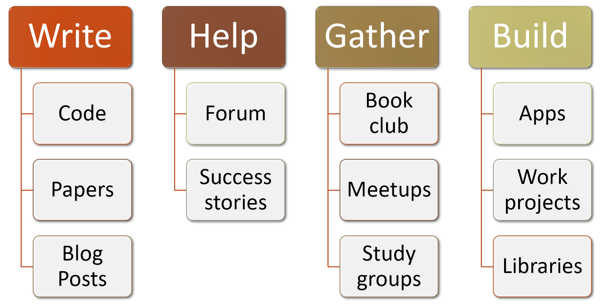

#hide
! [ -e /content ] && pip install -Uqq fastbook
import fastbook
fastbook.setup_book()Concluding Thoughts
[[chapter_conclusion]]
Congratulations! You’ve made it! If you have worked through all of the notebooks to this point, then you have joined the small, but growing group of people that are able to harness the power of deep learning to solve real problems. You may not feel that way yet—in fact you probably don’t. We have seen again and again that students that complete the fast.ai courses dramatically underestimate how effective they are as deep learning practitioners. We’ve also seen that these people are often underestimated by others with a classic academic background. So if you are to rise above your own expectations and the expectations of others, what you do next, after closing this book, is even more important than what you’ve done to get to this point.
The most important thing is to keep the momentum going. In fact, as you know from your study of optimizers, momentum is something that can build upon itself! So think about what you can do now to maintain and accelerate your deep learning journey. <

We’ve talked a lot in this book about the value of writing, whether it be code or prose. But perhaps you haven’t quite written as much as you had hoped so far. That’s okay! Now is a great chance to turn that around. You have a lot to say, at this point. Perhaps you have tried some experiments on a dataset that other people don’t seem to have looked at in quite the same way. Tell the world about it! Or perhaps thinking about trying out some ideas that occurred to you while you were reading—now is a great time to turn those ideas into code.
If you’d like to share your ideas, one fairly low-key place to do so is the fast.ai forums. You will find that the community there is very supportive and helpful, so please do drop by and let us know what you’ve been up to. Or see if you can answer a few questions for those folks who are earlier in their journey than you.
And if you do have some successes, big or small, in your deep learning journey, be sure to let us know! It’s especially helpful if you post about them on the forums, because learning about the successes of other students can be extremely motivating.
Perhaps the most important approach for many people to stay connected with their learning journey is to build a community around it. For instance, you could try to set up a small deep learning meetup in your local neighborhood, or a study group, or even offer to do a talk at a local meetup about what you’ve learned so far or some particular aspect that interested you. It’s okay that you are not the world’s leading expert just yet—the important thing to remember is that you now know about plenty of stuff that other people don’t, so they are very likely to appreciate your perspective.
Another community event which many people find useful is a regular book club or paper reading club. You might find that there are some in your neighbourhood already, and if not you could try to get one started yourself. Even if there is just one other person doing it with you, it will help give you the support and encouragement to get going.
If you are not in a geography where it’s easy to get together with like-minded folks in person, drop by the forums, because there are always people starting up virtual study groups. These generally involve a bunch of folks getting together over video chat once a week or so to discuss some deep learning topic.
Hopefully, by this point, you have a few little projects that you’ve put together and experiments that you’ve run. Our recommendation for the next step is to pick one of these and make it as good as you can. Really polish it up into the best piece of work that you can—something you are really proud of. This will force you to go much deeper into a topic, which will really test your understanding and give you the opportunity to see what you can do when you really put your mind to it.
Also, you may want to take a look at the fast.ai free online course that covers the same material as this book. Sometimes, seeing the same material in two different ways can really help to crystallize the ideas. In fact, human learning researchers have found that one of the best ways to learn material is to see the same thing from different angles, described in different ways.
Your final mission, should you choose to accept it, is to take this book and give it to somebody that you know—and get somebody else started on their own deep learning journey!